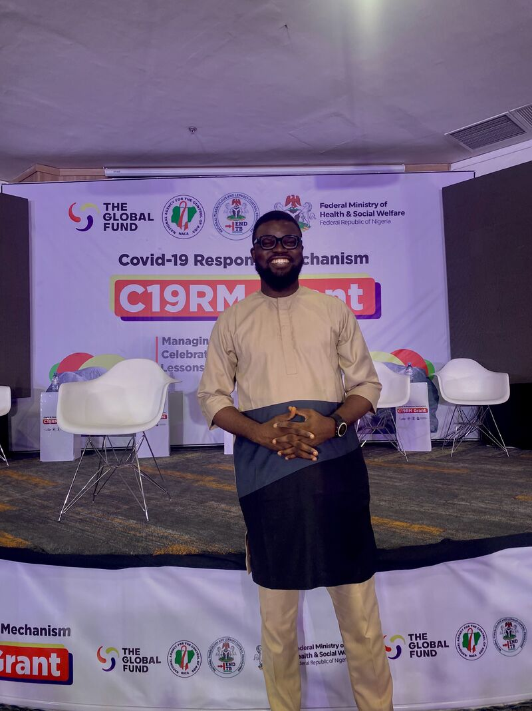
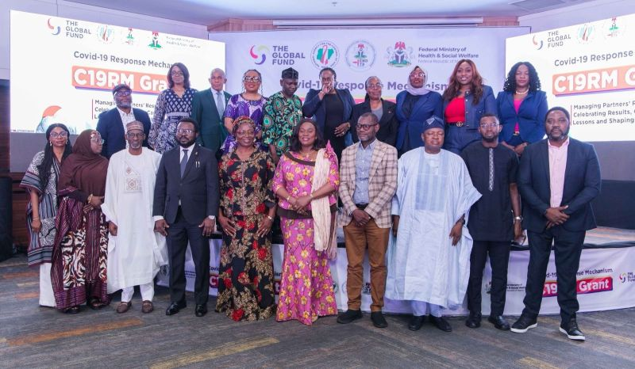
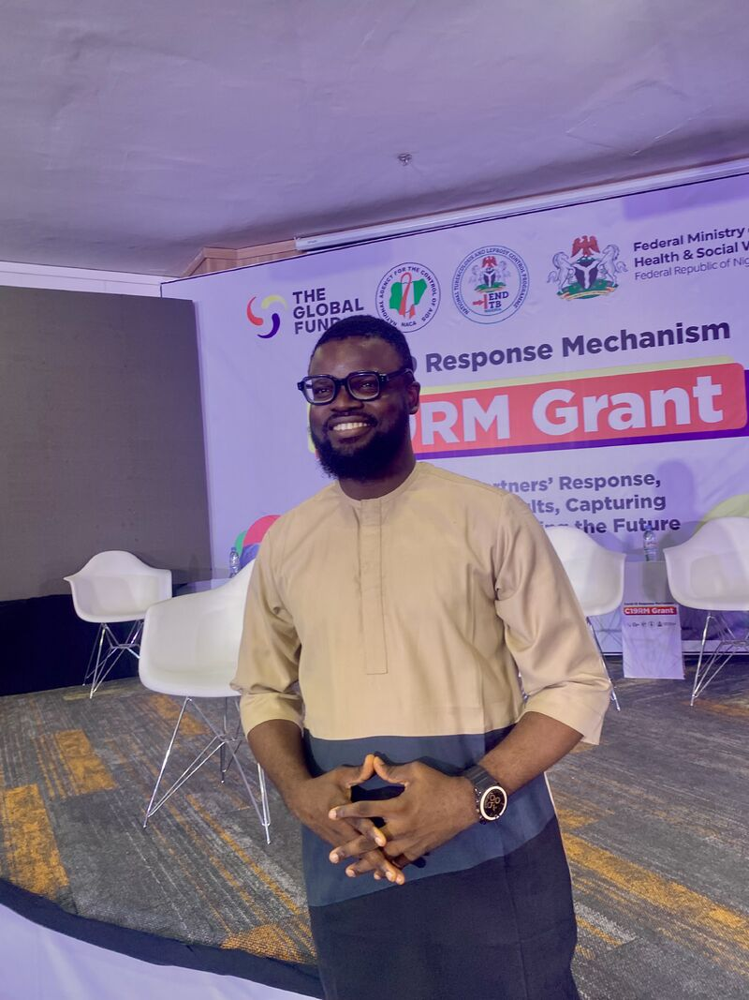
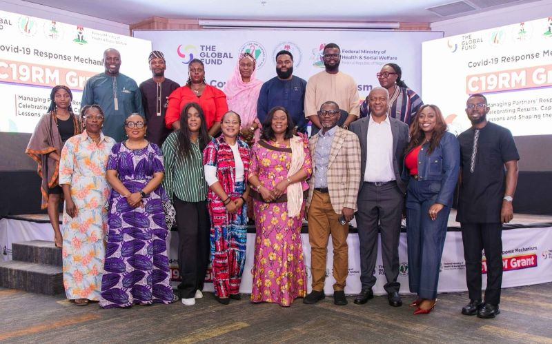

Independent & collaborative data research
Beyond client dashboards and reporting, I take on research work — from self-directed studies to a national, government-level impact evaluation — turning a raw dataset and a real question into a structured, evidence-backed answer.
How I approach a research project
Every project starts with the question, not the tool. From there the process is consistent, whether the dataset is public, mock, or client-provided:
- Define the specific questions the analysis needs to answer before touching the data.
- Clean and validate the raw dataset — standardizing formats, removing invalid records, and resolving inconsistencies (e.g. in SQL Server or Excel).
- Structure the data for analysis, including relational modeling (fact/dimension tables) for larger datasets.
- Analyze with the appropriate method — descriptive statistics, trend analysis, or segmentation — rather than defaulting to whatever's easiest to visualize.
- Report findings as clear, actionable conclusions, not just charts.
Nigeria C19RM Impact Evaluation
The Mandate
In 2026 I served as Research Data Manager and HEPR (Health Emergency Preparedness & Response) Pillar Co-Lead on the Nigeria C19RM Impact Evaluation — a Global Fund-funded initiative implemented by Jhpiego Nigeria in partnership with NACA and NTBLCP, under the Federal Ministry of Health & Social Welfare. The mandate was to rigorously evaluate how Nigeria deployed its COVID-19 Response Mechanism investments across major health system domains — supply chains, oxygen, laboratory systems, health workforce, surveillance, and pandemic preparedness — not just to document what happened, but to understand why it happened, what changed, and what it means for the next health emergency the country will face.
My Role & Approach
- Immersion: reviewed the study protocol, engaged NACA and NTBLCP stakeholders, built the project's Power BI dashboard wireframe, and designed and beta-tested the KoboToolbox data collection instrument.
- Field phase: co-facilitated enumerator training workshops across six geopolitical zones, then traveled to Gombe and Yola for direct field supervision — conducting Key Informant Interviews with senior state officials, including the Permanent Secretary, Ministry of Health, Adamawa State — while monitoring data quality across all six clusters in real time.
- Data transformation: cleaned hundreds of facility-level (IIRMS) submissions into eleven analysis-ready domain datasets.
- Analysis: ran the full quantitative programme across every domain — descriptive, comparative, equity, and before-and-after analysis.
- Synthesis: co-authored the HEPR evaluation chapter during a five-day writing bootcamp, then led the HMIS domain group at the national validation workshop in Abuja, where findings were reviewed by senior stakeholders in real time.
"Not just to document what happened, but to understand why it happened, what changed, and what it means for the next health emergency this country will face."
Results & Impact
The findings were presented at a ministerial dissemination event, reaching the highest levels of government and directly informing how Nigeria plans and evaluates its response to the next health emergency.




Open to collaboration
I'm open to collaborative projects and research work, both short and long term — whether that's a one-off study, an ongoing research partnership, or academic-adjacent data work. If you have a dataset and a question but not the analytical bandwidth, that's exactly the kind of project I'm looking for.
Have a research question and a dataset?
Tell me what you're trying to find out — I'll tell you honestly whether it's answerable with what you have.